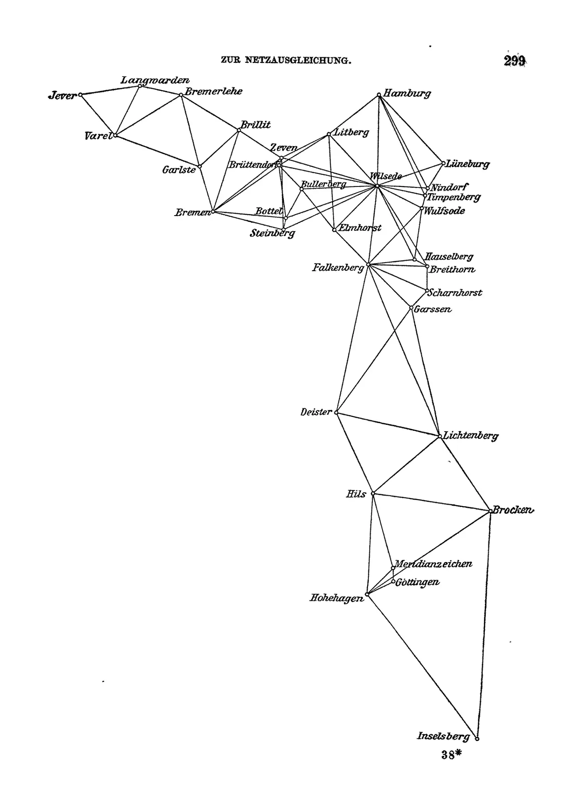
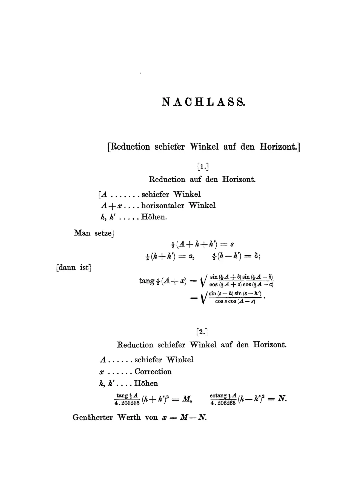
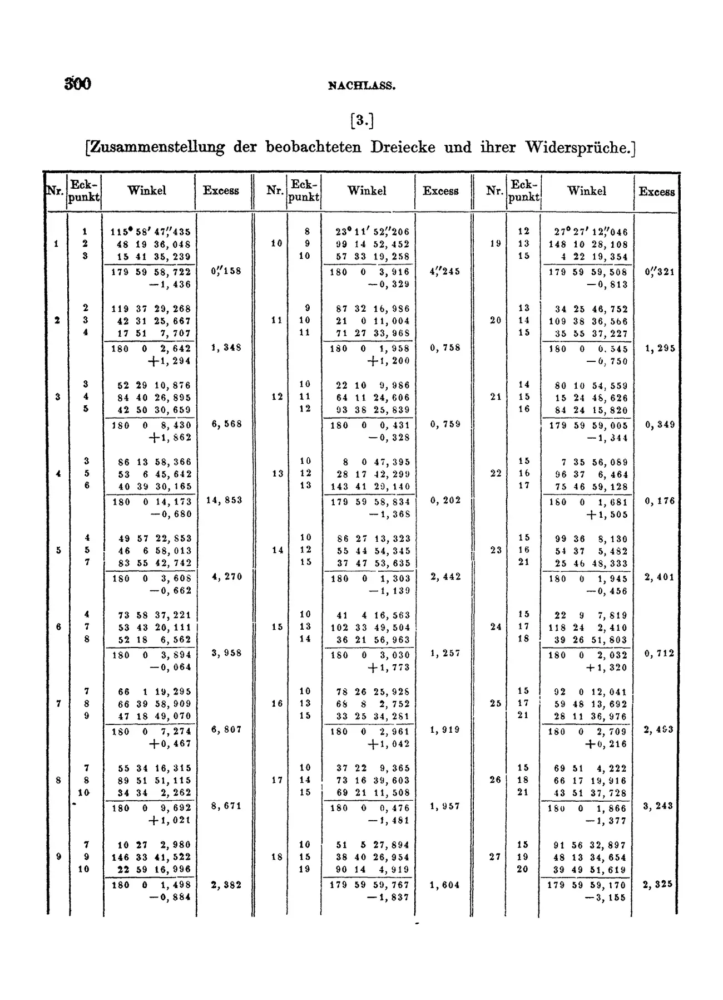
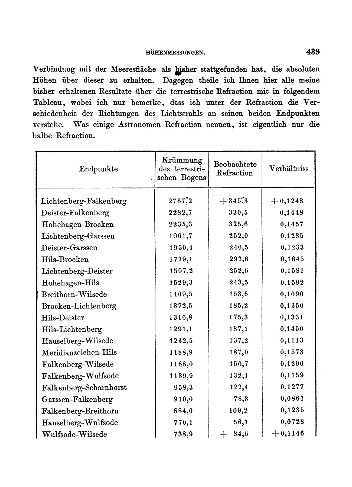

The Hanover Triangulation, 1821 to 1824
How Gauss measured the chain of triangles from Göttingen to Hamburg and on to Jever, from his collected works (Werke, vols. IV and IX). Page numbers are book pages. Numbers in amber are computed in this report from the printed values; every other number is printed in the source.
Click any quote ⤢, figure ⤢ or page number to open the source page. The cited part is marked in yellow.
1. Summary
From 1821 to 1824 Gauss carried a chain of triangles through the Kingdom of Hanover along the meridian of Göttingen, and joined the observatories of Göttingen and Altona (p. 5). The network has 33 main points and 51 triangles in which every angle was observed (pp. 297, 300-301). Its largest triangle, Hohehagen, Brocken, Inselsberg, has sides of 69 to 106 km.
- Lengths come from one measured base, Schumacher's base in Holstein, joined through the side Hamburg-Hohenhorn (p. 48). Everything else is angles.
- Horizontal angles were read with the theodolite levelled on the local plumb line. Angles sighted above or below the horizon were reduced to the horizontal (p. 509).
- In 36 of 51 triangles the observed angles add up to more than 180°. In the great triangle the surplus is 14.173″ (p. 300).
- Set against area, the surplus of all 51 triangles gives R = 6,682 km ± 228 km. The slope sits 14.7σ from zero, the value a plane needs.
- The vertical angles were measured from both ends of each line. Gauss used them to measure refraction itself: ratio 0.1306 for 1821-1823 (p. 440). The vertical work does not enter the horizontal angle sums.
- The triangles put Altona 115,163.725 toises north of Göttingen. The star latitudes put it 2° 0′ 57.42″ north. One degree is 57,127.2 toises (p. 48), a radius of 6,379.4 km.
Baseline, angles, corrections. One length was measured on the ground. All other lengths follow from horizontal angles. The curvature shows in the horizontal angle sums, which a plane fixes at exactly 180°. Drop and refraction corrections belong to the vertical angles and the heights. Gauss measured refraction from reciprocal zenith distances and never added it to the horizontal sums.
2. Sources
- Gauss, Werke IX (1903), Geodäsie. The Göttingen-Altona latitude difference (1828), the network adjustment papers with the list of observed triangles, the coordinates of the main points, the refraction results, the heliotrope, and Gauss's letters to Olbers, Schumacher, Bessel and Gerling about the survey.
- Gauss, Werke IV (1873). The Disquisitiones generales circa superficies curvas (1828), art. 28, where the great triangle is the worked example.
Both volumes are scanned by the Göttinger Digitalisierungszentrum. German and Latin passages are quoted in the original with an English translation.
3. The survey and its base
"Durch die von mir in den Jahren 1821—1824 durch das Königreich Hannover längs des Meridians von Göttingen geführte Dreieckskette sind die Sternwarten von Göttingen und Altona auf das Genaueste trigonometrisch mit einander verbunden. [...] hier wird nur bemerkt, dass die absoluten Grössen auf der von Herrn Prof. Schumacher in Holstein mit äusserster Schärfe gemessenen Basis beruhen, mit welcher das Dreieckssystem durch die Seite Hamburg-Hohenhorn zusammenhängt; die Orientirung gründet sich auf die Beobachtungen am Göttinger Mittagsfernrohr, da die Sternwarte und das nördliche Meridianzeichen selbst Dreieckspunkte sind."
English: "By the chain of triangles I carried through the Kingdom of Hanover along the meridian of Göttingen in the years 1821 to 1824, the observatories of Göttingen and Altona are joined trigonometrically with the greatest precision. [...] Here it is only noted that the absolute sizes rest on the base measured with the utmost sharpness by Prof. Schumacher in Holstein, to which the triangle system is joined through the side Hamburg-Hohenhorn; the orientation rests on the observations at the Göttingen transit instrument, since the observatory and the northern meridian mark are themselves triangle points."
The base fixes the scale only. Hamburg-Hohenhorn is 13,841.815 toises (p. 48), 26.98 km. Every other side is computed from it with angles.
The work began as a continuation of Schumacher's Danish arc through Hanover. Gauss and Schumacher made the first connecting measurements at Lüneburg in October 1818 (p. 429).
4. The heliotrope
Gauss built the survey on sunlight. A small mirror at the far station sends the Sun's reflection to the observer, and the target becomes a point of light.
"Den Kennern der höhern Geodäsie sind die Schwierigkeiten bekannt, sich zur Bildung grosser Dreiecke recht zweckmässige Zielpunkte zu verschaffen. [...] Die Messungen bei Nacht mit Hülfe Argandscher Lampen sind zwar diesen Fehlern nicht unterworfen, haben aber dagegen, besonders auf schwer zugänglichen Bergen, andere Inconvenienzen [...]"
English: "Those who know higher geodesy know the difficulty of getting really suitable targets for forming large triangles. [...] Measurements at night with Argand lamps are free of these faults, but have other inconveniences instead, especially on mountains that are hard to reach [...]"
"Eine auf photometrische Gründe gestützte Untersuchung hatte ihm schon früher die Überzeugung gegeben, dass das von einem nur sehr kleinen Planspiegel reflectirte Sonnenlicht auch in den allergrössten Entfernungen, welche nur bei Triangulirungen vorkommen können, noch hinlängliche Kraft haben müsse, um den schönsten Zielpunkt abzugeben."
English: "An investigation based on photometric grounds had already convinced him that sunlight reflected by only a very small plane mirror must still have enough strength, even at the very greatest distances that can occur in triangulations, to give the finest target."
The heliotrope light also shows the state of the air. In the flat country on sunny mornings it was a comet-like disc up to a minute across. Toward evening it shrank to a fine star-like point (p. 440). Gauss observed in the hours when it was a point.
5. The stations and the network

⤢| Nr. | Point | Latitude | Longitude from Göttingen |
|---|---|---|---|
| 1 | Göttingen | 51° 31′ 48.028″ | 0° 0′ 0″ |
| 2 | Merid.-Zeichen | 51° 34′ 30.309″ | -0° 0′ 0.007″ |
| 3 | Hohehagen | 51° 28′ 31.234″ | +0° 10′ 45.143″ |
| 4 | Hils | 51° 53′ 53.000″ | +0° 6′ 41.152″ |
| 5 | Brocken | 51° 48′ 1.849″ | -0° 40′ 23.071″ |
| 6 | Inselsberg | 50° 51′ 8.619″ | -0° 31′ 24.311″ |
| 7 | Lichtenberg | 52° 7′ 22.020″ | -0° 20′ 33.348″ |
| 8 | Deister | 52° 14′ 5.778″ | +0° 20′ 35.702″ |
| 9 | Garssen | 52° 39′ 40.397″ | -0° 12′ 19.154″ |
| 10 | Falkenberg | 52° 50′ 52.481″ | +0° 4′ 34.858″ |
| 11 | Scharnhorst | 52° 43′ 43.000″ | -0° 19′ 1.620″ |
| 12 | Breithorn | 52° 49′ 45.985″ | -0° 19′ 11.230″ |
| 13 | Hauselberg | 52° 51′ 36.513″ | -0° 14′ 28.226″ |
| 14 | Wulfsode | 53° 4′ 15.113″ | -0° 17′ 48.837″ |
| 15 | Wilsede | 53° 10′ 9.647″ | +0° 0′ 11.329″ |
| 16 | Timpenberg | 53° 7′ 22.103″ | -0° 19′ 35.387″ |
| 17 | Nindorf | 53° 8′ 56.063″ | -0° 20′ 32.170″ |
| 18 | Lüneburg | 53° 15′ 4.641″ | -0° 27′ 29.462″ |
| 19 | Elmhorst | 52° 59′ 42.886″ | +0° 18′ 24.543″ |
| 20 | Litberg | 53° 23′ 20.206″ | +0° 19′ 45.061″ |
| 21 | Hamburg | 53° 33′ 0.900″ | -0° 2′ 8.755″ |
| 22 | Bullerberg | 53° 9′ 47.220″ | +0° 31′ 45.928″ |
| 23 | Brüttendorf | 53° 15′ 57.245″ | +0° 40′ 42.934″ |
| 24 | Bottel | 53° 2′ 22.919″ | +0° 39′ 22.916″ |
| 25 | Zeven | 53° 17′ 55.135″ | +0° 39′ 43.446″ |
| 26 | Steinberg | 52° 59′ 54.987″ | +0° 40′ 7.347″ |
| 27 | Bremen | 53° 4′ 48.867″ | -1° 8′ 22.781″ |
| 28 | Brillit | 53° 24′ 47.035″ | +0° 57′ 0.384″ |
| 29 | Garlste | 53° 15′ 58.486″ | +1° 13′ 37.091″ |
| 30 | Bremerlehe | 53° 34′ 7.239″ | +1° 21′ 2.134″ |
| 31 | Varel | 53° 23′ 56.979″ | +1° 48′ 24.812″ |
| 32 | Langwarden | 53° 36′ 20.450″ | +1° 38′ 7.093″ |
| 33 | Jever | 53° 34′ 26.427″ | +2° 2′ 26.615″ |
6. How the angles were measured
At each station the theodolite was levelled, and the directions to the other points were read on its horizontal circle by repetition. A horizontal angle is the angle between two vertical planes through the instrument's plumb line. Sighting up or down does not change it. When a reading was taken on an inclined circle, the oblique angle was reduced to the horizon with the altitudes of the two targets:

⤢From the Brocken, several auxiliary targets lay well below the horizontal:
"Ich wähle zu Hülfsrichtungen gern spitze Thürme, nicht gar zu entfernt und wo möglich nicht gar zu arg ausser der Horizontalebene. Letztere Bedingung war freilich auf dem Brocken nicht zu erreichen. Huyseburg liegt 1°37′, Hüttenrode 1°54′ und eine Stange auf dem Wurmberg, die ich 1821 aufpflanzen und 1823 erneuern liess (obwohl an einem etwas andern Platz), 2°13′ unter dem Horizont."
English: "For auxiliary directions I like to choose pointed towers, not too far away and if possible not too badly out of the horizontal plane. The latter condition could of course not be met on the Brocken. Huyseburg lies 1°37′, Hüttenrode 1°54′, and a pole on the Wurmberg, which I had set up in 1821 and renewed in 1823 (though at a somewhat different place), 2°13′ below the horizon."
Gauss then adjusted the whole network by least squares. In 1823 no direction among 76 had to move by 1″, and the mean error of a direction was 0.486″:
"Ich habe nunmehro die mühsame Ausgleichung meiner sämmtlichen Messungen von 1821—1823, so weit sie die Hauptdreiecke betrifft, vollendet, so dass nun nicht nur die Summen der Winkel der einzelnen Dreiecke, sondern auch die Verhältnisse der Seiten in den gekreuzten Vierecken und Fünfecken genau zu einander passen [...] Im ganzen Systeme sind 76 Richtungen, d. i. 38 jede hinwärts und herwärts. Bei keiner von ihnen hat die Ausgleichung 1″ betragen [...]"
English: "I have now finished the laborious adjustment of all my measurements of 1821 to 1823, as far as the main triangles are concerned, so that now not only the sums of the angles of the single triangles, but also the ratios of the sides in the crossed quadrilaterals and pentagons fit each other exactly [...] In the whole system there are 76 directions, that is 38 each way. In none of them did the adjustment reach 1″ [...]"
"so dass nun alle 150 Richtungen, die das System enthält, so ausgeglichen sind, mit den möglich kleinsten Änderungen, dass sie genau mit einander harmoniren. Es sind unter den 150 fünf, die über 1″ haben geändert werden müssen [...] so dass ich das Dasein der Lateral-Refraction in den flachen Gegenden gar nicht bezweifeln kann; in den höhern Gegenden sind die Ausgleichungen immer viel kleiner."
English: "so that now all 150 directions the system contains are adjusted, with the smallest possible changes, so that they agree exactly with each other. Among the 150, five had to be changed by more than 1″ [...] so that I cannot doubt at all that lateral refraction exists in the flat regions; in the higher regions the adjustments are always much smaller."
Section 7 uses the angles as observed, before this network adjustment.
7. The 51 observed triangles

⤢"[Zusammenstellung der beobachteten Dreiecke und ihrer Widersprüche.] Nr. · Eckpunkt · Winkel · Excess"
English: "[Compilation of the observed triangles and their closure errors.] No. · Corner · Angle · Excess"
Each block gives the three observed angles, their sum, Gauss's computed spherical excess, and the closure error: the sum minus 180° minus the excess. Every row was checked: the three angles add up to the printed sum, and the sum minus the excess gives the printed closure, to 0.001″.
All 51 triangles
| Nr. | Corners | Observed angles | Sum − 180° | Printed excess | Closure | Area km² |
|---|---|---|---|---|---|---|
| 1 | Göttingen · Merid.-Zeichen · Hohehagen | 115° 58′ 47.435″ 48° 19′ 36.048″ 15° 41′ 35.239″ | −1.278″ | 0.158″ | −1.436″ | 31 |
| 2 | Merid.-Zeichen · Hohehagen · Hils | 119° 37′ 29.268″ 42° 31′ 25.667″ 17° 51′ 7.707″ | +2.642″ | 1.348″ | +1.294″ | 266 |
| 3 | Hohehagen · Hils · Brocken | 52° 29′ 10.876″ 84° 40′ 26.895″ 42° 50′ 30.659″ | +8.430″ | 6.568″ | +1.862″ | 1,297 |
| 4 | Hohehagen · Brocken · Inselsberg | 86° 13′ 58.366″ 53° 6′ 45.642″ 40° 39′ 30.165″ | +14.173″ | 14.853″ | −0.680″ | 2,934 |
| 5 | Hils · Brocken · Lichtenberg | 49° 57′ 22.853″ 46° 6′ 58.013″ 83° 55′ 42.742″ | +3.608″ | 4.270″ | −0.662″ | 843 |
| 6 | Hils · Lichtenberg · Deister | 73° 58′ 37.221″ 53° 43′ 20.111″ 52° 18′ 6.562″ | +3.894″ | 3.958″ | −0.064″ | 782 |
| 7 | Lichtenberg · Deister · Garssen | 66° 1′ 19.295″ 66° 39′ 58.909″ 47° 18′ 49.070″ | +7.274″ | 6.807″ | +0.467″ | 1,345 |
| 8 | Lichtenberg · Deister · Falkenberg | 55° 34′ 16.315″ 89° 51′ 51.115″ 34° 34′ 2.262″ | +9.692″ | 8.671″ | +1.021″ | 1,713 |
| 9 | Lichtenberg · Garssen · Falkenberg | 10° 27′ 2.980″ 146° 33′ 41.522″ 22° 59′ 16.996″ | +1.498″ | 2.382″ | −0.884″ | 471 |
| 10 | Deister · Garssen · Falkenberg | 23° 11′ 52.206″ 99° 14′ 52.452″ 57° 33′ 19.258″ | +3.916″ | 4.245″ | −0.329″ | 839 |
| 11 | Garssen · Falkenberg · Scharnhorst | 87° 32′ 16.986″ 21° 0′ 11.004″ 71° 27′ 33.968″ | +1.958″ | 0.758″ | +1.200″ | 150 |
| 12 | Falkenberg · Scharnhorst · Breithorn | 22° 10′ 9.986″ 64° 11′ 24.606″ 93° 38′ 25.839″ | +0.431″ | 0.759″ | −0.328″ | 150 |
| 13 | Falkenberg · Breithorn · Hauselberg | 8° 0′ 47.395″ 28° 17′ 42.299″ 143° 41′ 29.140″ | −1.166″ | 0.202″ | −1.368″ | 40 |
| 14 | Falkenberg · Breithorn · Wilsede | 86° 27′ 13.323″ 55° 44′ 54.345″ 37° 47′ 53.635″ | +1.303″ | 2.442″ | −1.139″ | 482 |
| 15 | Falkenberg · Hauselberg · Wulfsode | 41° 4′ 16.563″ 102° 33′ 49.504″ 36° 21′ 56.963″ | +3.030″ | 1.257″ | +1.773″ | 248 |
| 16 | Falkenberg · Hauselberg · Wilsede | 78° 26′ 25.928″ 68° 8′ 2.752″ 33° 25′ 34.281″ | +2.961″ | 1.919″ | +1.042″ | 379 |
| 17 | Falkenberg · Wulfsode · Wilsede | 37° 22′ 9.365″ 73° 16′ 39.603″ 69° 21′ 11.508″ | +0.476″ | 1.957″ | −1.481″ | 387 |
| 18 | Falkenberg · Wilsede · Elmhorst | 51° 5′ 27.894″ 38° 40′ 26.954″ 90° 14′ 4.919″ | −0.233″ | 1.604″ | −1.837″ | 317 |
| 19 | Breithorn · Hauselberg · Wilsede | 27° 27′ 12.046″ 148° 10′ 28.108″ 4° 22′ 19.354″ | −0.492″ | 0.321″ | −0.813″ | 63 |
| 20 | Hauselberg · Wulfsode · Wilsede | 34° 25′ 46.752″ 109° 38′ 36.566″ 35° 55′ 37.227″ | +0.545″ | 1.295″ | −0.750″ | 256 |
| 21 | Wulfsode · Wilsede · Timpenberg | 80° 10′ 54.559″ 15° 24′ 48.626″ 84° 24′ 15.820″ | −0.995″ | 0.349″ | −1.344″ | 69 |
| 22 | Wilsede · Timpenberg · Nindorf | 7° 35′ 56.089″ 96° 37′ 6.464″ 75° 46′ 59.128″ | +1.681″ | 0.176″ | +1.505″ | 35 |
| 23 | Wilsede · Timpenberg · Hamburg | 99° 36′ 8.130″ 54° 37′ 5.482″ 25° 46′ 48.333″ | +1.945″ | 2.401″ | −0.456″ | 474 |
| 24 | Wilsede · Nindorf · Lüneburg | 22° 9′ 7.819″ 118° 24′ 2.410″ 39° 26′ 51.803″ | +2.032″ | 0.712″ | +1.320″ | 141 |
| 25 | Wilsede · Nindorf · Hamburg | 92° 0′ 12.041″ 59° 48′ 13.692″ 28° 11′ 36.976″ | +2.709″ | 2.493″ | +0.216″ | 493 |
| 26 | Wilsede · Lüneburg · Hamburg | 69° 51′ 4.222″ 66° 17′ 19.916″ 43° 51′ 37.728″ | +1.866″ | 3.243″ | −1.377″ | 641 |
| 27 | Wilsede · Elmhorst · Litberg | 91° 56′ 32.897″ 48° 13′ 34.654″ 39° 49′ 51.619″ | −0.830″ | 2.325″ | −3.155″ | 459 |
| 28 | Wilsede · Elmhorst · Bullerberg | 42° 33′ 27.431″ 84° 47′ 57.993″ 52° 38′ 34.441″ | −0.135″ | 1.693″ | −1.828″ | 334 |
| 29 | Wilsede · Litberg · Hamburg | 45° 0′ 51.885″ 84° 52′ 57.836″ 50° 6′ 11.565″ | +1.286″ | 2.487″ | −1.201″ | 491 |
| 30 | Wilsede · Litberg · Brüttendorf | 34° 48′ 0.088″ 101° 28′ 7.642″ 43° 43′ 53.705″ | +1.435″ | 2.191″ | −0.756″ | 433 |
| 31 | Wilsede · Litberg · Zeven | 30° 5′ 29.996″ 107° 32′ 36.600″ 42° 21′ 53.525″ | +0.121″ | 1.921″ | −1.800″ | 380 |
| 32 | Wilsede · Bullerberg · Brüttendorf | 14° 35′ 5.378″ 129° 39′ 39.937″ 35° 45′ 16.305″ | +1.620″ | 1.040″ | +0.580″ | 206 |
| 33 | Wilsede · Bullerberg · Bottel | 17° 4′ 24.040″ 123° 8′ 53.705″ 39° 46′ 43.583″ | +1.328″ | 1.205″ | +0.123″ | 238 |
| 34 | Wilsede · Brüttendorf · Bottel | 31° 39′ 29.418″ 73° 29′ 4.981″ 74° 51′ 28.080″ | +2.479″ | 2.837″ | −0.358″ | 561 |
| 35 | Wilsede · Brüttendorf · Zeven | 4° 42′ 30.092″ 86° 18′ 24.187″ 88° 59′ 5.626″ | −0.095″ | 0.446″ | −0.541″ | 88 |
| 36 | Wilsede · Bottel · Steinberg | 4° 49′ 12.346″ 118° 47′ 2.512″ 56° 23′ 44.550″ | −0.592″ | 0.475″ | −1.067″ | 94 |
| 37 | Wilsede · Zeven · Steinberg | 41° 11′ 11.856″ 72° 55′ 2.636″ 65° 53′ 47.465″ | +1.957″ | 3.739″ | −1.782″ | 739 |
| 38 | Timpenberg · Nindorf · Hamburg | 42° 0′ 0.982″ 135° 35′ 12.820″ 2° 24′ 48.643″ | +2.445″ | 0.269″ | +2.176″ | 53 |
| 39 | Nindorf · Lüneburg · Hamburg | 58° 35′ 48.718″ 105° 44′ 11.719″ 15° 40′ 0.752″ | +1.189″ | 1.461″ | −0.272″ | 289 |
| 40 | Litberg · Brüttendorf · Zeven | 6° 4′ 28.958″ 42° 34′ 30.482″ 131° 20′ 59.151″ | −1.409″ | 0.176″ | −1.585″ | 35 |
| 41 | Bullerberg · Brüttendorf · Bottel | 107° 11′ 26.358″ 37° 43′ 48.676″ 35° 4′ 44.497″ | −0.469″ | 0.592″ | −1.061″ | 117 |
| 42 | Brüttendorf · Bottel · Bremen | 59° 44′ 38.189″ 78° 30′ 30.141″ 41° 44′ 55.085″ | +3.415″ | 2.046″ | +1.369″ | 404 |
| 43 | Brüttendorf · Zeven · Bremen | 140° 27′ 52.643″ 36° 4′ 22.652″ 3° 27′ 47.775″ | +3.070″ | 0.228″ | +2.842″ | 45 |
| 44 | Bottel · Steinberg · Bremen | 87° 50′ 59.267″ 84° 1′ 37.540″ 8° 7′ 19.939″ | −3.254″ | 0.384″ | −3.638″ | 76 |
| 45 | Zeven · Steinberg · Bremen | 52° 8′ 25.642″ 74° 31′ 34.625″ 53° 20′ 2.799″ | +3.066″ | 2.677″ | +0.389″ | 529 |
| 46 | Zeven · Bremen · Brillit | 70° 47′ 36.223″ 33° 44′ 16.825″ 75° 28′ 6.218″ | −0.734″ | 2.207″ | −2.941″ | 436 |
| 47 | Bremen · Brillit · Garlste | 34° 29′ 55.787″ 29° 37′ 54.644″ 115° 52′ 10.501″ | +0.932″ | 1.207″ | −0.275″ | 238 |
| 48 | Brillit · Garlste · Bremerlehe | 74° 40′ 45.427″ 62° 1′ 7.722″ 43° 18′ 7.460″ | +0.609″ | 1.908″ | −1.299″ | 377 |
| 49 | Garlste · Bremerlehe · Varel | 55° 8′ 33.295″ 72° 2′ 17.413″ 52° 49′ 7.348″ | −1.944″ | 2.976″ | −4.920″ | 588 |
| 50 | Bremerlehe · Varel · Langwarden | 44° 10′ 12.284″ 31° 37′ 2.215″ 104° 12′ 45.166″ | −0.335″ | 1.214″ | −1.549″ | 240 |
| 51 | Varel · Langwarden · Jever | 64° 45′ 53.786″ 56° 15′ 43.900″ 58° 58′ 23.815″ | +1.501″ | 1.461″ | +0.040″ | 289 |
Closures run from −4.920″ to +2.842″. Their mean is −0.505″ and their standard deviation 1.491″. The 51 triangles share sides; Gauss counts 43 independent angle conditions in the whole system (p. 297).
8. The great triangle: Hohehagen, Brocken, Inselsberg
| Corner | Observed angle (p. 300) | Gauss's reduction (Vol. IV, p. 258) |
|---|---|---|
| Hohehagen | 86° 13′ 58.366″ | −4.95113″ |
| Brocken | 53° 6′ 45.642″ | −4.95104″ |
| Inselsberg | 40° 39′ 30.165″ | −4.95131″ |
| Sum | 180° 0′ 14.173″ | −14.85348″ |
"Ita e.g. in triangulo maximo inter ea, quae annis praecedentibus dimensi sumus, puta inter puncta Hohehagen, Brocken, Inselsberg, ubi excessus summae angulorum fuit = 14″,85348, calculus sequentes reductiones angulis applicandas prodidit: Hohehagen −4″,95113, Brocken −4″,95104, Inselsberg −4″,95131."
English: "Thus, for example, in the largest triangle among those we measured in the preceding years, namely between the points Hohehagen, Brocken, Inselsberg, where the excess of the sum of the angles was 14.85348″, the calculation gave the following reductions to be applied to the angles: Hohehagen −4.95113″, Brocken −4.95104″, Inselsberg −4.95131″."
Art. 28 of the Disquisitiones is where Gauss tests whether the Earth's flattening makes the three reductions unequal. On the spheroid the three shares differ only in the fourth decimal of a second, so in practice the excess splits into thirds, as in Legendre's theorem on the sphere.
Taken alone, the great triangle's observed surplus of 14.173″ over 2,934 km² gives R = 6,534 km. A plane gives 0″ and no finite R.
9. What the angle sums measure
On a sphere of radius R, a triangle's angles add up to 180° plus its area divided by R², in radians. On a plane the surplus is 0″ for every triangle, whatever its size. So the measured surplus plotted against area is a straight line through zero, with slope 1/R². Flat is the horizontal axis.
| Quantity | Value |
|---|---|
| Total area of the 51 triangles | 22,585 km² |
| Sum of the 51 measured surpluses | 88.556″ |
| Sum of Gauss's computed excesses | 114.313″ |
| Least-squares slope through zero, as R | 6,682 km ± 228 km |
| Slope over its standard error | 14.7 |
| Flat prediction | 0″ in every triangle |
10. Triangle explorer (sim)
The triangle is drawn to scale from the printed coordinates. The bars compare the measured surplus with what a sphere of the trial radius predicts, area ÷ R², and with flat, 0″. The fit panel shows the sum of squared misfits over all 51 triangles for the trial R.
11. Vertical angles and refraction
At each point Gauss also measured the zenith distances of the other points with a 12-inch repeating circle, from both ends of each line (p. 438). Over a line of central angle γ, two reciprocal zenith distances add up to 180° + γ without refraction. What they add up to less than that is the refraction. Gauss tabulated it line by line:
"Dagegen theile ich Ihnen hier alle meine bisher erhaltenen Resultate über die terrestrische Refraction mit in folgendem Tableau, wobei ich nur bemerke, dass ich unter der Refraction die Verschiedenheit der Richtungen des Lichtstrahls an seinen beiden Endpunkten verstehe. Was einige Astronomen Refraction nennen, ist eigentlich nur die halbe Refraction."
English: "Instead I give you here all my results so far on terrestrial refraction in the following table, where I only note that by refraction I mean the difference between the directions of the light ray at its two end points. What some astronomers call refraction is really only half the refraction."

⤢"Das Mittel aus allen Bestimmungen, mit Rücksicht auf die Länge der Linien, wäre 0,1306. Man sieht, dass die Anomalien bei kleinen Entfernungen viel grösser sind, als bei grossen."
English: "The mean of all determinations, taking the length of the lines into account, would be 0.1306. One sees that the anomalies are much larger at small distances than at large ones."
"Es bleiben also noch 22 Linien übrig, wo die reciproken Zenithdistanzen vollständig gemessen sind, d.i. mit dem 12-zölligen Kreise und unter wenigstens 20-maliger Repetition, und wo ohne Ausnahme Heliotroplicht der Zielpunkt gewesen ist. [...] Also das Mittelverhältniss wie 1 zu 0,14778. [...] So verstanden geben also meine diesjährigen Messungen 0,07389."
English: "So there remain 22 lines where the reciprocal zenith distances are fully measured, that is with the 12-inch circle and with at least 20-fold repetition, and where without exception heliotrope light was the target. [...] So the mean ratio is as 1 to 0.14778. [...] Understood that way [as half], my measurements of this year give 0.07389."
The ratio is refraction over the arc's central angle. Gauss's 0.13 to 0.15 is the full bend; half of it, 0.065 to 0.074, is the coefficient k in modern use. The arc itself, the curvature in the first column, comes from the positions computed through the horizontal triangulation (p. 440). The vertical angles measure the refraction against it; they do not set it.
12. Stars and triangles: the Göttingen-Altona arc
In 1827 Gauss took Ramsden's zenith sector to Göttingen and Altona and measured the difference of latitude with stars near the zenith, about 900 observations (p. 390). The latitudes of the meridian circles came out as:
"in Göttingen [...] für den Platz des Reichenbachschen Meridiankreises 51°31′47″,85 [...] in Altona [...] für den Platz des Meridiankreises 53°32′45″,27."
English: "at Göttingen [...] for the place of Reichenbach's meridian circle 51°31′47.85″ [...] at Altona [...] for the place of the meridian circle 53°32′45.27″."
"Nach der trigonometrischen Verbindung der Sternwarten von Göttingen und Altona liegt letztere 115163,725 Toisen nördlich, 7,211 Toisen westlich von jener. [...] sie gründen sich auf den Werth der Dreiecksseite Hamburg-Hohenhorn 13841,815 Toisen, und diese auf die von Hrn. Prof. Schumacher in Holstein im Jahr 1820 gemessene Basis. [...] Der mittlere Breitengrad zwischen beiden Sternwarten ergibt sich danach = 57127,2 Toisen, merklich grösser, als man nach den mittlern Werthen der in Frankreich und England gemessenen Grade hätte erwarten sollen."
English: "According to the trigonometric connection of the observatories of Göttingen and Altona, the latter lies 115,163.725 toises north and 7.211 toises west of the former. [...] They rest on the value of the triangle side Hamburg-Hohenhorn, 13,841.815 toises, and this on the base measured by Prof. Schumacher in Holstein in 1820. [...] The mean degree of latitude between the two observatories then comes out = 57,127.2 toises, noticeably larger than one would have expected from the mean values of the degrees measured in France and England."
| Star latitude difference | 2° 0′ 57.42″ |
| Triangulated north distance | 115,163.725 toises = 224.458 km |
| One degree | 57,127.2 toises = 111.343 km |
| Meridian radius of curvature | 6,379.4 km |
Gauss found the Brocken's star latitude 10″ to 11″ off the triangulated one, and Altona 5.52″ off (p. 49). His reading of it defines the surface the survey measures:
"Was wir im geometrischen Sinn Oberfläche der Erde nennen, ist nichts anderes als diejenige Fläche, welche überall die Richtung der Schwere senkrecht schneidet, und von der die Oberfläche des Weltmeers einen Theil ausmacht."
English: "What we call the surface of the Earth in the geometric sense is nothing other than the surface that everywhere cuts the direction of gravity at right angles, and of which the surface of the world ocean is a part."
13. Print slip: Bremen's longitude
The coordinate list prints Bremen, Ansgarii tower, at −1° 8′ 22.781″ from the Göttingen meridian (p. 427). In that column minus is east. Bremen lies west of Göttingen on the network figure (p. 299). With the printed sign, triangles 42 to 47 give radii of 7,200 km to 15,800 km from Gauss's own excess. With the sign reversed, all 51 triangles agree with an Earth-sized sphere. This report and the KML use the reversed sign.
14. Downloads
- hanover_triangulation_1821.kml: the 33 points and the sides of the 51 triangles, for Google Earth.
- triangles.json: the 51 triangles as printed, with areas and sides.
15. References
- Gauss, C. F. (1903). Werke, Band IX: Geodäsie (Fortsetzung von Band IV). Göttingen: Königliche Gesellschaft der Wissenschaften; Leipzig: B. G. Teubner. Göttinger Digitalisierungszentrum, PPN23601515X.
- Gauss, C. F. (1873). Werke, Band IV: Wahrscheinlichkeitsrechnung und Geometrie. Göttingen: Königliche Gesellschaft der Wissenschaften. Göttinger Digitalisierungszentrum, PPN236005081.
- Natural Earth. (2022). 1:10m land, version 5.1.1. naturalearthdata.com.
Aether Cosmology Research Group. Pre-release draft, November 2026.